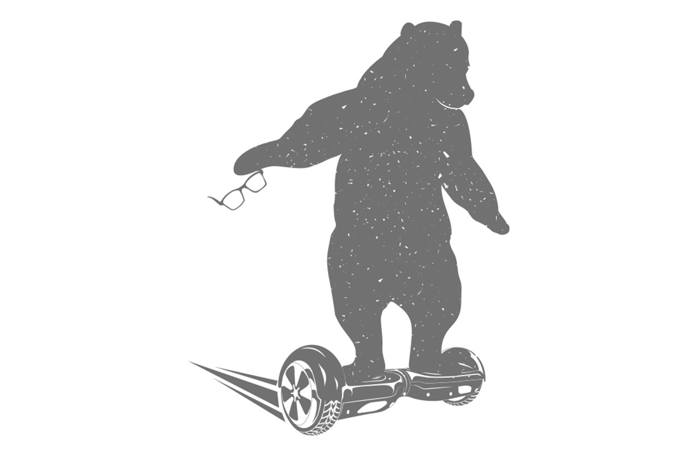

| あなたの考えは、あなたをだます | |
| ヘンリ・ユンティラ | |
| VOICE (2016) | |
DO WHAT YOU LOVE: Essays on Uncovering Your Path in Life
by
Henri Junttila
Copyright© 2014 by Henri Junttila
Japanese translation rights arranged with
Henri Junttila, Tornio through Tuttle-Mori Agency, Inc., Tokyo
Bookdesign
Yumiko Fujii
はじめに
「ワクワクするような好きなことに取り組む生き方」というのは目新しい考えではありません。呼び方や表現方法は変化してきましたが、本質的な部分は変わっておらず、何千年も前から取り上げられてきたテーマだといえるでしょう。
2000年前にソクラテスは、自分の内から聞こえる声を「ダイモン」と呼び、その声によって人生が導かれたとしています。また、ゲーテの内面にも同じような存在があり、そのおかげで人生を全うしようと思わせられたのだといいます。
ペルシアの詩人、ジャラール・ウッディーン・ルーミーの詩にも、次のような一節があります。
本当に愛するものには不思議と引き寄せる力がある。
その力に身を任せなさい。
その導きは決して間違うことはない。
「ワクワクすることに取り組む」「好きなことをする」といった生き方とは、自分に生きている実感を与えてくれるものを追う、内面から導こうと発せられる声に耳を傾ける、自分の強みや好みを知る、ということです。そして、それらをもとに、人生を歩むに値するものにつくり上げるということです。
心からの呼びかけを無視すると、虚しさを感じたり、気持ちが落ち込んだり、喪失感に襲われたり、混乱したりします。なぜわかるのかって？ そうしたことを私も経験してきたからです。
これは地球上のすべての人に当てはまります。自分が意識しているよりも、もっと内面の深いところにある、正しい方向へ私たちを導こうと待ってくれている存在と、だれでもつながることができます。直観、本能、神、潜在意識、心など、その存在はずっと昔から、さまざまな名前で呼ばれてきました。
ワクワクすることや好きなことを仕事にするのか、あるいは趣味にするのか、といったことは問題ではありません。この本の目的は仕組みや解決方法を示すことではないのです。私は、あなたを生涯導こうと待っている"心"に目を向けてもらうために、この本を執筆しました。
私はリアリストです。
論理的な考え方を学んで大人になりました。
ですから、心の声に従う生き方を初めて知ったとき、その効果を全く信じてはいませんでした。自分の興味に従うだけで変化が起こるとは思えなかったのです。しかし、どん底にいた私には他にどうしようもありませんでした。それならば試してみようと、そう思いました。
そして、実際に取り組んでみました。
すると人生が変わったのです。
問題や怖れがすべてなくなるわけではありません。人である限り、問題や怖れは必ず出てくるからです。しかし、どのように人生の舵取りをすればよいかが、わかるようになりました。
心の声を信頼すればするほど、より多くの喜び、幸せ、充実感、ワクワク、楽しさを感じ取ることができるようになっていったのです。
あなたも心の底ではわかっているはずです。しかし、相反するアドバイスも聞こえているのではないでしょうか？ 周囲の人々は、好きなことばかりをしてはいけないといいます。現実的になりなさい、仕事に就きなさい、安全な道を選びなさい、と。
しかし、あなたよりもあなた自身のことを知っている人はいません。つまり自分の声を聞いて初めて、その人生はあなたの望む方向へ動き出すのです。
私はこの本で、なにをすべきかを教えようなどとは思っていません。私にわかっていることと、これまでの著作や開いてきた講座、運営しているウェブサイト「WakeUpCloud.com」を通して、何千もの人々の力になってきた経験からわかったことを共有したいだけなのです。
お伝えしたいのは成功法則ではありません。
私の生き方です。
こうした生き方をするようになって、まるで私に協力してくれるかのように人生が変わりました。それを偶然という人もいるでしょう。あるいはシンクロニシティという人もいるでしょう。しかし、私がわかっているのは「とにかくそれが起こる」ということだけです。
自分の怖れと思い切って向き合い、そこに飛び込もうと決めてからは、すべてが変わりました。好きなことばかりに取り組むなんて不可能だと思いますか？ しかし、それは違うのです。
この後も引き続き読んでいただければ、あなたの歩みを引き止めているものの存在に気づき、心が軽く穏やかになるでしょう。この生き方を始めるために必要なものは、すでにあなたの中にあると気づくでしょう。そして、ずっと行く手を阻んできた、ただ一つのものの正体が明らかになるはずです。
この本の読み方
読者やクライアントなどから、これまで私に投げかけられた質問をもとに、この本は生み出されました。2009年から私は、人が自分のワクワクを見つけてそれに従い、好きなことに取り組みながら生きるためのサポートをしてきましたが、その過程で、ワクワクや好きなことへの挑戦は決して難しいことではなく、非常にシンプルなことだと気づきました。しかし、シンプルだからといって容易であるとは限りません。ときにシンプルなことほど難しい場合もあります。
この本に私が綴ったことは自分の個人的経験に基づいています。生まれたときから「なにをすべきか」を、私も知っていたわけではありません。ワクワクするような好きなことをする生き方を学ぶのは大変でした。そんなことが可能だとも知らず、どの本を読めばいいかもわかりませんでした。
それでも、どうにか自分なりの方法を見つけました。
興味を感じるものに意識を向け、一歩ずつ進んでいきました。
この本では、1章につき1つの問題を扱います。各章は独立したエッセイとして読めるようになっています。しかし、私としては、ひと続きの作品として冒頭から終わりまで読んでいただくことを、あえてお勧めします。
各章の最後に、実際に行動するためのステップを載せました。特定の質問について考えたり、書き出すことで、内面を掘り下げられるようにしています。その過程を通し、得たことが自分の中に浸透しやすくなります。
この本では「ワクワクすること」「好きなこと」などといった言葉を、同じ意味で使っています。私にとって、これらの言葉はどれも、心が感じるままに人生を送る、ということを表します。
また、この本には特定の考え方が繰り返し出てきます。これは意図的に行っていることです。何らかの考え方が繰り返し出てきたときは、特に注意を払ってください。その考え方を心に染み込ませてください。
ここに書かれてあることのすべてが、あなたの役に立つとは限りません。でも、それでよいのです。自分にとってよいと感じるものを選び、使ってください。他は忘れてしまっても構いません。
これは、あなたのための本です。
私のための本ではないのですから。
"ワクワクするような好きなことに取り組む"という生き方に向かって人生の旅を始めると、1つのパズルを解いていくことになります。普通のパズルではありません。ピースは1箇所にまとめてではなく、あちらこちらに散らばった状態で置かれています。完成図がわからないので、何度もまごつきます。
「どう生きるか？」という探求を始めると、完成させるべきパズルを渡されます。しかし、完成するまで"そのパズルがどんなものなのか"はわかりません。試しながら、手探りで進まねばなりません。
でも、安心してください。どこへ向かっているかを理解しておく必要はありません。自分の今の力で、できることをすればよいのです。つまりワクワクする気持ち、心、直観など、呼び方はどうであれ、そうしたものに従えばよいのです。必ずしも、すべての意味がわからなくても大丈夫です（少なくとも今は）。
心が惹かれる（ワクワクする）ものに注目しましょう。あなたは世界のだれとも違います。ですから、進む道は自分だけのものです。頼りとなるのは自分の心です。
すべきことは今までの生き方をやめるだけです。思考を重視しすぎたり、すべてを明確に把握しようとしないでください。リラックスすれば心の声が明瞭になり、パズルのピースが正しい場所にはまり始めます。
私が自分の心に従う生き方を始めたとき、最初のうちはなにをしたらよいのかわかりませんでした。しかし、すぐに「大切なのは、なにをすべきかわかっているかどうかではなく、準備ができたと"思う"前に始めることだ」 と気づきました。
『Live Your Truth』の著者カマル・ラヴィカントは次のようにいっています。
「どんなに優れた人たちでも心配はするし、みずからを疑う。彼らの多くも詰め寄られて追及されたなら、今の自分で十分かどうか不安に感じていると認めるだろう。他の人々と優れた人々との違いは、それでも彼らは崖から飛び降りるという点だ。翼は落ちていくときに生えるのだ」
私の問題は、"ワクワクすることや好きなこと"についての考え方でした。それらに取り組むためには、「すべてを明確にしておかなければならない」と思っていました。事前に「計画」「画期的な商品のアイデア」「革新的なメッセージ」が必須である、という思考にだまされていたのです。しかし、そのどれも必要ではありませんでした。
本当に必要だったのは始める勇気だったのです。
「行動する勇気」
「実験する勇気」
単純に聞こえるかもしれませんが、この勇気を持つことで私はうまくいきました。
シンプルなアドバイスが最高のアドバイスになることがあります。問題は単純かどうかではなく、学んだことを使おうとする意志なのです。
もちろん考えることが重要なときもあります。けれども、もし動けなくなっていたり混乱しているのなら、考えるのはお終いにしましょう。混乱した頭で答えを探してもうまくいきません。
というわけで、ためしに「わかろうとすることではなく、始めようとすることが重要だったとしたら？」と考えてみてください。
「ワクワクすること」について、どんな考えを持っていたとしても、すべて手放しましょう。それらの考えの影響を受けることを、自分で選んだということに気づきましょう。自分でつくったルールが行動の妨げになっているなら、そんなものはゴミ箱へ捨ててください。
さあ、実験を始めましょう。
どんなに無意味に思えても、今興味を持っているものに注目してみてください。
なによりも大切なのは、真面目になりすぎないことです。リラックスすればするほど、そして、楽しめば楽しむほど、心からの呼びかけが聞こえるようになります。心は常にあなたが気づいてくれるのを待っています。分析と計画をやめることができれば、はっきりと現れるようになります。
もし、なにに対しても興味がわかない、ワクワクしないという場合でも、答えはやはり同じです。それは「動くこと」です。あなたを止めているのは、「正しい選択をしなければいけない」「なにかが足りない」という思考です。
手持ちのピース（力量・スキル・能力など）で、できる限りのことをし続けていると、パズルの絵はだんだんと完成に近づいていきます。
しかし、そのためには、まずは今持っているピースで物事を始めなければなりません。
現在、興味を抱いているものから始めましょう。
できる限りのことをして、人生がどこへ続いていくのか見てみるのです。
Action Step
各章の終わりには、実際に行動を起こすための、このようなステップを掲載しています。頭の中でこれらをイメージすることもできますが、私はメモをとりながら考えることをお勧めします。
この章では、なにが自分が行動することを妨げているのかを探ります。
「どんな思考が前に進もうとする自分を止めていると思いますか？」
また、次のように自分に質問してみてください。
「この思考を信じていないとしたら、次にどんな行動をとるだろうか？」
準備がよければ、次の章へ進みましょう。
本気で心の声に耳を傾けるようになるまで、私は失敗することや恥をかくことを怖れていました。そのため長い間、人生を楽しむことができませんでした。真面目すぎることで、魂が干からびてしまっていたのです。
何冊ものノートに目標や夢、アイデアをぎっしり書き込んだり、どんな人生になってほしいかという具体的なイメージまで思い描きもしてきたのですが、なによりも現実世界で試そうとしなかったため、どれも実現しませんでした。
小説家のレイ・ブラッドベリはこういっています。
「人生とは、うまくいくかどうかの実験だ」
問題なのは、多くのアイデアに翻弄されることではなく、それらを試そうとしないことです。 たくさんの「ワクワクすること」や「スキル」のリストを作っている人から、メールがよく送られてきます。でも、彼らはそうしたリストがあっても行動できていません。なぜなら、始める前に、すべてを隅々まで明確にしておこうとするからです。
そして、そのことが、かえって行動を妨げるということを私は発見しました。「Wake Up Cloud」というサイトを立ち上げてブログを始めたとき、この構想がうまくいくかどうか、だれかが閲覧しに来てくれるかどうかもわかりませんでした。それでも、とにかく始めることに決めたのです。
なぜだと思いますか？
ただそうしたかったからです。
ブログを始めるというアイデアが浮かんだとき、心がオープンになり自由で好奇心に満ちた気持ちになったからでした。
何年もの間、私は行動しようとする自分を引き止めていました。どこに向かうべきかの確信がなかったためです。しかし、ある日、隅々まで明確に把握しようとすることに嫌気がさし、それで動き始めることにしたのです。
行動し始めてみると「そうか！」と感じる瞬間がありました。そのときどきの心のときめきに従って行動するだけでいい、ということがわかりました。自分の心や直観に、できる限り従うだけ。道がどこへ続いているかを知っておく必要はなかったのです。
自分を刺激するアイデアを試してみるだけでよかったのです。すべてを一気に実行しようとせず、1つずつでよかったのです。 完璧に分析しようとすることをやめ、私の心をつついて注意を惹こうとしてくる存在に従えばよかったのです。
ブログを始めるというアイデアに対しては、初めから大きな情熱を持っていたわけではありませんでした。しかし、自分を引き寄せる磁力を感じ、どんなことが起こるか行けるところまで探求してみたいと思うようになりました。
今、あなたには、抵抗できないぐらい惹きつけられるような唯一のワクワクの対象やアイデアは、まだないかもしれません。ただ、なにかしら興味を持っているものは、あなたにもあるのではないでしょうか？ その興味というタネは、関心を向け、行動し、さらにそれを探求することで育っていきます。
私の問題は、アイデアがありすぎることでも、ワクワクが多すぎることでもなく、行動しようとしなかったことでした。このことを心の底から理解すると、面白そうだと思うアイデアを1つ選び、行動し、ベストを尽くすだけでいいのだとわかりました。
関心という水をやることで、私のブログは成長していきました。
読者の声を聞き、自分の心の声を聞きました。
するとフィードバックが返ってきます。
それを受けて軌道修正をしていきました。
間違ったアイデアをあえて選ぼうとするぐらいでなければなりません。
じっと留まっていることを拒否しなければなりません。前に向かってさえいるなら、よろめき、転んでも構いません。これからなにをすることになるのか、わからなくたっていいのです。
1つのアイデアがうまくいかなかったなら、他のアイデアをいつでも試すことができます。でも、行動してみなければ、それらがどうなるか知ることすらできません。
実業家であり発明家のチャールズ・F・ケタリングはこういいました。
「進み続けていれば、思いがけないところで、つまずくこともあるだろう。しかし、座っている人がつまずいた、という話は聞いたことがない」
どの分野であっても発明家、起業家、クリエイターはみな、成功よりも多くの失敗を経験するものです。けれども、彼らが成功できるのは、自分の内と外の両方の抵抗に合っても進み続けるという意志があるからです。
ですから覚えていてください。多すぎるアイデアに囲まれてパニックになるのは、とんでもなく創造的な脳を持っているからなのだということを。その優れた力をどこに向けるかが重要です。自分のアイデアを現実世界で試すことに、その脳を使ってください。行動し、自分のアイデアを試すことによってのみ明確になるのです。
思考にだまされてはいけません。アイデアが多すぎることは行動できない理由にはなりません。
自分にできると思えなくても、最初の行動を起こすか起こさないかは、ほんの少しの意志の違いなのです。
Action Step
メモをとりながら、次の質問について考えてください。
「どのようなアイデアなら、行動することができるでしょうか？ 面白そうだと感じるでしょうか？」
今だけは実現する可能性についての疑念は脇へ置き、アイデアを楽しんでください。そのアイデアのためにどのような行動をとりますか？
小さく考える、ということを覚えておいてください。ごく小さく考えましょう。例えば本をまるまる1冊書こうとするのではなく、1章の中の段落を1つだけ書けばいい、と考えるのです。人気のウェブサイトを作ろうと考えるのではなく、記事を1つだけ書いてみるのです。
この本の中には、何度も「小さなステップ」という考え方が出てきますが、この小さなステップを、ひとつひとつクリアしていくことで夢はかないます。
ワクワクすることや新しいプロジェクトに取り組もうとするときに、「もし何の役にも立たないものだったら？」「もし決断が間違っていて、何年もの時間を無駄にすることになってしまったら？」というような怖れを感じたことはありませんか？
けれども、その怖れこそが時間を無駄にさせています。そうした思考はあなたに絶えずささやきかけ、"行動しない"という無駄な時間を生み出させているのです。
また私たちは、「実行する価値のあるもの」と「実行する価値のないもの」が自分にはわかっているという前提で、物事を考えがちです。けれども、未来になにが起こるか、あるいは物事が今後どうなるのかは、だれにもわからないのです。
時間の無駄と思ったことが、実は自分に恵みをもたらすものだったことはありませんか？
逆に、価値があると思ってとった行動が、最終的には時間の無駄だったことはありませんか？
未来になにが待っているかはわかりません。私たちは今のこのときを一瞬ずつ生きることしかできないのです。
例えば私の場合、ミスや失敗の多くが、今までとは違う視点で物事を見るきっかけをもたらしてくれました。おかげで、そのときまで気づかなかった道を発見できたことがあります。
なにが時間の無駄になり、なにが有益なのかは、前もってわかりません。私が知る限り、たとえ時間の浪費をしていると自分が思うときですらも、無駄ではありません。なぜなら、すべてのことが"学び"につながっているからです。「このようなことは学びにはならない」と強く思うようなときでさえもです。
読む人がだれもいないような本を執筆していたとしましょう。しかし、本を作り出すために、そのテーマについて深く考えるという行動を通して、なにかを得ているはずです。執筆が思うように進まないことを学ぶかもしれません。行動するという行為そのものが、さらなる行動を呼ぶことになります。
「時間を無駄にするのでは？」という、まさにその考えこそが、実際に時間を無駄にさせています。 自分の思考にだまされ、ネガティブな気持ちにさせられているのです。そうした状態は、「その思考をまともに取り上げる必要はない」という心からのサインだといえます。
時間を無駄にしたくないという思いの下には、別の状態になりたいという願いがあります。幸せが感じられ、自分は大丈夫だと思わせてくれる状態です。例えば「好きなことを仕事にする」という目標を私が持っていたとします。すると、その目標が自分を幸せにしてくれると信じ、早くその目標を達成するために、できるだけ時間を無駄にしたくないと考えるようになります。
実は、その裏には別の大きな思い込みが隠されています。なにかわかりますか？
それは「自分を幸せにしてくれるのは自分以外のものである」という意識です。しかし、実際はそうではありません。幸せは内から来るものです。どう感じるかを決めるのは自分です。人生でも、状況でもありません。
この思い込みがあると、「本質的に自分はすでに幸せであり平和である」という事実も覆い隠してしまいます。「考えにとらわれる、あるいは考えすぎることをやめたら幸せを感じた」「幸せとまではいえないけれど少なくとも満足を感じた」という経験はありませんか？ それは、私たちがすでに必要なものをすべて持っていることを意味します。ですから、今まで慣れ親しんだ考え方から抜け出すだけでいいのです。
好きなことに取り組み、ワクワクして生きたいのなら、コンフォートゾーン（自分にとって心地よい、ぬるま湯のような領域）から出る意志を持たなければなりません。一度出てしまえば、怖れも心配もあなたを止める力がないことがわかります。
ベストを尽くしている限り、そして、失敗から学んでいる限り、あなたは成長しています。その時間は無意味ではありません。決して無駄にはならないのです。
一見、失敗に見えるような道を進んだとしても、人生を永遠に変えてしまうようなことを、自分に教えてくれるかもしれません。
未来についてどんな考え方をしていても、今すべきことは変わりません。いつだってそれは「心に従って、今の自分にできることをする」ことです。
時間を無駄にしているからといって、それがどうしたというのでしょう？
人生を真面目に考えないといけないと、だれがいったのでしょうか？
今あるもので、挑戦しましょう。
それで十分です。それが唯一できることなのですから。
Action Step
この行動ステップでは、目を閉じ、流れに任せている状態を想像してください。リラックスしている状態を想像してください。そして、人生を思い切り楽しんでいると想像してください。
自分の思い込みに注意しましょう。自分の思考にどれほど影響されているかに気づきましょう。流れに任せている状態を感じ、しばらく浸ります。その感覚を楽しみます。
ここまで、自分の行動を妨げているものは人生ではなく思考 だということをみてきました。別のいい方をすると、私たちはその思考にだまされることを、受け入れているというわけです。
経験をつくり出すのは自分です。これは現実や状況をつくっているということではありません。経験の受け止め方は自分次第 という意味です。人は皆、自分の考えを通して人生を経験します。
例えば、私はよくお金に関する怖れを感じます。良くないことが起こると考え始めると、未来までもが不安になります。もしブログの読者が急に減ったり、書評サイトで自著に星1つという評価がつくなどしたら、もうお終いだと考えてしまうのです。
ところが、現実にはそんな大変な事態はまず起こりません。すべては自分の頭の中でだけ起こっていることです。
私をはじめ、人は皆、自分の思考に対して感情を持ちます。 状況に対してではありません。状況に対してまず思考が現れ、それからなにかを感じるのです。
ですから、思考をコントロールしたり、変える必要はありません。ただ、どのようなプロセスで経験がつくられているのか、ということに注意を向けるだけでよいのです。
私の場合は、そうすることで「差し迫った状況にいる」という感覚にとらわれずに済むようになりました。それが「自分の思考でしかない」ということが、わかるようになったからです。"思考がもたらす不安や怖れ"をどうにか解決しようと手を出して邪魔しなければ、最終的には勝手に平常運転に戻ります。自分の注意を今この瞬間に向け、すべきことがあればそれを行えばいいのです。
もしイライラや怒り、混乱などのネガティブな感情を覚えたら、それは「その思考は信用ならない」という潜在意識からのサインです。その問題について、なにも対処する必要はありません。
かつて老子はこういいました。
「泥水もそのままにしておけば澄んだ水になる」
同じことが思考にもいえます。「うまくことが運ぶようにしなければいけない」と私たちは思い込みがちですが、これまでの人生の中で起きた大きな出来事を振り返ってみてください。愛する人と出会ったり、素晴らしいアイデアを思いついたり......などなど。そうしたことのどれもが、自分がコントロールして起こした出来事ではなかったはずです。
私たちに必要なのは人生をコントロールすることではなく、人生を十分に経験することです。
では、このことが、好きなことをする生き方と、どんな関係があるのでしょう？
なにもかもです。
ワクワクすることや好きなことに挑戦できないのは、人生のせいではなく自分の考えのせいです。 あるいは、自分で受け入れることを選んだ思考のせい、といってもよいでしょう。
ネガティブな気持ちに決してなってはいけない、ということではなく、思考を深刻に捉えすぎないようにする、ということです。
必ずしも簡単なことではありません。私自身、何日も心配や怖れで頭がいっぱいになるときがあります。でも、そうしたネガティブな気分のときは、それが自分の思考に拠るものであることがわかっているので、その思考に従って行動することを避けます。少なくとも以前の自分よりはしなくなりました。
「とはいえ、思考が助けになることだってあるじゃないか」
中には、このように感じる方がいるかもしれません。
もちろんです。
ただし、それは楽しい気持ちで、自由で、平安と喜びに満ちているとき、自分の心や直観と、しっかりとつながっているときに限ります。そのタイミングこそが、思考を使って問題解決をするときであり、決断を下すときです。
しかし、気持ちが後ろ向きになっているときは、ニセの緊急事態を察知してしまいがちです。そういうときは、ありもしない問題を解決しようとします。
好きなことに取り組み、ワクワクに従う生き方に関して、今までの思考パターンを変える以外に必要なことはなにもありません。言い訳、怖れ、心配、どれも思考です。現実のように見えるのは、そのように人生ができているからです。しかし、現実のように見えるからといって、それらが現実であるというわけではありません。
それは映画を見ている状況と似ています。映画は、ときには現実のように見え、映画であることを忘れてしまうことさえあります。しかし、映画は現実ではありません。私たちの人生の経験も同じようにつくられているのです。
人生という道を隅々まで把握しようとするのをやめると、はっきりとわかるようになります。いつの間にか、わかってくるのです。日々の生活で意識していると、心の声、つまり最高のアイデアや解決方法が、どんな状況で見つかりやすいかに気づくでしょう。それはたいてい、散歩をしているとき、シャワーを浴びているとき、休暇中、読書をしているとき......など、頭がリラックスすることをしているときではないでしょうか？
私たちは、大きな存在の一部です。原子レベルでは私たちは、みな同じ物質でできています。あなたと私の間に境界はありません。あるように感じているだけです。
とはいえ、私がいうことをすべて鵜呑みにしないでください。こうした考え方を検証し、実際に実験してみてください。
自分で見つけてみましょう。
いつもどのような感情が思考に反応して現れるかに注意するようにしてください。人生があなたに感情を起こさせることはありません。状況から感情が生まれることはありません。あなたが抱いているのは思考に対する感情なのです。
世界的に有名なサクセスコーチ、マイケル・ニールは著書『The Inside-Out Revolution』の中で「どんなに人生の経験が怖ろしく過酷で不安であっても、自分が経験していることが自分の思考によるものだと気づけば、その思考があなたを止める力は大きく失われる」と書いています。
私は、経済的な怖れについて、特にこのことを実感しています。現実のことのように感じたとしても、その怖れは自分の思考だと私は知っています。自分にできるのは、今この瞬間に留まり、自分の持てる力でベストを尽くすだけだとわかっています。
ですから、もし気持ちが落ち込むことがあったなら、それは自分の思考のせいだと気づいてください。散歩をしましょう。映画を見ましょう。思考を通常の穏やかな状態に戻しましょう。
しなければならないことは（精神的には）、なにもありません。
心や直観はいつでもそばにあり、あなたを待っています。それらこそが本来の姿です。
あなたの本質は、幸せや喜び、ワクワク、自身が望むものそのものです。そんなふうには思えないかもしれませんが、前へ進み続ければ、それがわかっていくでしょう。
Action Step
自分の思考に、どのような感情を抱くか意識するためのステップです。
あなたが感じているのは状況ではありません。人生でもありません。自分の思考を感じているのです。そして、思考が経験をつくります。
1分間、思考を感じることをやめてみましょう。
「自分が世界に与えることができるものなど一つもないに違いない」「たとえあったとしても、それに対価を払う人などきっといない」などと思ってはいませんか？
また、あなたより豊富な知識を持っている人は世の中にいます。そうした人たちと張り合うことはできないとも思っていませんか？
もしスピリチュアルなことや人の成長、あるいはビジネスに興味があって、他の人に伝えるべきものを持っていたとしても、怖れや疑いがあると、それがあなたを止めてしまいます。
けれども、思い込みの方向を変えることで、それが可能だとしたら、どうでしょうか？
例えば、自信に満ちて過ごしているときなら、提供できるものがあると思うのではありませんか？
心の奥ではわかっているはずです。自分には他人に与えることができるものがあるのだと。しかし、気分が落ち込んでいると、感情（と思考）は、あなたに違う世界を経験させようとします。
「こんな知識はだれもが知っている当たり前のことなのでは？」とあなたを悩ませ、その情報がありふれたものだと惑わすかもしれません。
その答えはイエスでもあり、ノーでもあります。少なくともあなたの力を必要とする人たちは、その知識をまだ知りません。あるいは、あなたならではの解釈の仕方を知りません。だからこそ、同じテーマについて語られる何万ものウェブサイトや本が存在するのです。
それは私たちのだれもが、唯一無二の存在だからです。一人として同じ人はいません。あなたと同じ経験をする人、そして、同じ世界観を持つ人は、他にだれもいないのです。
心に従うようになって、自己啓発の分野において自分が一番ではないことを私は知りました。しかし、同時にこの分野こそが自分が心から挑戦したいことである、ということもわかりました。選択肢は2つ。怖れに屈するか、怖くても行動するか、です。
そして、たとえ同じことをしている人が他にいたとしても、自分が提供しようとしているものが簡単すぎることであったとしても、そんなことは問題ではないと、私は最終的に結論づけました。大切なのは、それを自分がしたいかどうか。それだけで十分だったのです。
心の奥では、どこか1つの方向へ引っ張られていると、あなたも感じているかもしれません。自分を止めているのは、自分が持っている思考です。このことを何度も繰り返しお伝えするのは、「思考に対して、常に感情を抱いている」ということを一度理解してしまえば、人生が変わるからです。
冷静になると、人生に対し楽天的になります。それは正しい道筋にいるという、自分の本質からの合図です。しかし、問題解決の思考にとらわれて身動きが取れなくなると気分が落ち込みます。そんなときは一歩引いて休めという合図だと受け止めましょう。
気分と共に変化するということから、思考はどちらかといえば錯覚に近いということがわかります。ですから、与えるものがないと自分が思うからといって、他人もそう思うとは限らないのです。
だからといって、多くの人々があなたのまわりに群がるとか、なにをしても称賛してくれるということではありません。今持てる力で始めることはできる、というだけのことです。
あなたは学ぶことができます。
あなたは向上することができます。
向上すればするほど、より多くの人を助けることができます。そして、より多くの人を助けるほど、好きなことを通してお金を得られる可能性が高まります。
なにも保証はありません。
魔法の法則もありません。
秘訣もありません。
今いるところから、今の力で始めるという意志を持つだけです。
そして、覚えておいてください。あなたにとって当たり前なことが、他の人にとってもそうだとは限りません。 いつも自分の言葉の影響の大きさに、私自身も驚かされています。当たり前だと思っていることを発信しただけなのに、と感じることが多々あります。私もいまだに自分の思考にとらわれ、だまされることがあります。例外ではありません。ただ、己ができることをし、自分にとっての真実を伝え続けているだけです。
でも、それで十分なのです。
与えることができるものは、きちんと存在しています。そうでなければ、あなたはこの本を読んでいないでしょう。私たちは皆、大きなタペストリーの一部です。どうやって、あるいは、なぜかはわかりませんが、そうだと私にはわかります。
ですから、思考が大騒ぎしても大丈夫。行動を起こさせないようにと、怖れがあなたをだまそうとしても放っておきましょう。
そして、片方の足をもう片方の足の前へ出し続けるのです。小さな一歩を踏み出し続けるのです。心の声に耳を傾け続けるのです。なぜなら、そうすることで、差し出せるものが自分にあるとわかるからです。
だれか別の人になろうとしないでください。
あなたのままでいてください。
今のあなたで十分なのです。
ゆえに、あなたは存在しています。それこそが心が欲していることです。
ルーミーもこういっています。
「魂を掻き立てる、すべての呼びかけに応えなさい」
Action Step
「気分が良く、直観が冴え、ワクワクし、気持ちが高まっているとしたら、どのようにして世界をサポートしたいと思いますか？」
気分が良いときに、この質問の答えを考えてみましょう。
思い出してください。「気分が良いときは思考を信頼してよい」ということを。ネガティブな気分のときは休憩をとりましょう。
本当の自分をさらけ出すことをためらってしまうのは、そうすることで人からなにかをいわれるのではないか、という怖れがあるためです。十分な知識のない人間と判断され、笑いものにされるのを怖れているのです。
ミュージシャンであろうと、作家であろうと、コーチであろうと、技師であろうと、思っていることを他の人に伝えようとすると、自分を外に出すことになります。執筆したテキストをインターネット上にアップロードすることだったり、ミーティングで意見を述べることだったり、本当に思っていることを友人に話す......などなど。
ありのままの自分として、その思いを伝えるぐらいなら、仮面を被って隠れてしまいたくなるかもしれません。だれも自分のことを批評しないようにと祈りながら、身を潜めたくなるかもしれません。しかし、そうした行動は、自分で自分をすでに判断しているということを意味します。
実際よりも多くのことを知っているように見せかける必要などありません。別人のふりをする必要もありません。あなた自身のストーリーだからこそ、あなた自身の考え方だからこそ、人は惹かれるのです。
すべてを知っている人など存在しません。知らないことがなくなることは生涯ありません。本当の自分を表に出そうが出すまいが、他人の行動に人は意見を持つものなのです。
私たちは常に承認を求めたがります。しかし、世界中のすべての人から承認を得たり、彼らを喜ばせる必要はありません。そもそも、そんなことは不可能です。あなたのすることが気に入らない人は必ずいるものなのです。
本当の自分を出せば、ふさわしい人々が引き寄せられます。しかし、仮面をつけると、その仮面のイメージに引き寄せられた人々が集まってきます。その場合、彼らはだれ一人として、あなたに満足しないでしょう。
本当の人間の本当のストーリーを人は求めます。演技をしている人間は見抜かれます。人は賢いものです。違和感を覚えます。それならば、自分の傷もなにもかも、すべてありのままにさらけ出してしまってみてはどうでしょうか？
周囲の人はどう反応するでしょう？
同じ苦しみを感じている人なら、親しみを抱くでしょう。なぜなら、そのストーリーに馴染みがあり、共感することができるからです。
本当の自分を表に出すことに対する怖れを克服するコツは、その怖れが「自分自身をあざむくためのストーリーから生まれているもの」だと気づくことです。それは、思考によってあなたが現実だと信じ込まされているものです。本当に怖れているのは自分を表に出すことではありません。実際は本当の自分を表に出すという「考え」に怖れを感じているのです。
上の言葉を胸に刻み込んでください。
理解しようとしてはいけません。
このことについて考えても問題解決にはなりません。これまでさんざん行ってきたことですから、もうおわかりでしょう。アメリカ・シカゴ出身の実業家ウィリアム・クレメント・ストーンはこういっています。
「考えても怖れは癒えないが、行動すれば癒える」
行動すると怖れは小さくなります。なぜなら自分の思考を見抜けるようになるからです。起こるかもしれない最悪の事態を想像し、実は自分自身の批判の声を聞いていたことに気づきます。
自分を表に出せばネガティブな気分になると、怖れはささやきかけてきます。しかし、実際は、自分を表に出すと考えただけで、すでにネガティブな気分を感じてはいませんか？
このことを私が実感したのは、コンフォートゾーンから出るのを引き延ばしていたときでした。私だけではありません。人気ブロガーでありベストセラー作家のジェームズ・アルトゥーカーもまた、自身のブログで「怖れがなくならない限り記事を書いても『公開する』のボタンは押さない」といっています。
自分を表に出すことは、だれにとってもなかなか難しいものです。あなただけではありません。ほとんどの人が自分を出せない理由は「怖れ」があるからです。
心を縛る鎖から自身を解放するためには、自分が考えたり感じていることが必ずしも真実ではない、ということに気づかねばなりません。 「そもそも鎖はない」ということに気づいてください。
私はこれまで何千もの記事を書き、インタビューを受け、本を書き、セミナーを開催してきました。批判も受けました。反論もされました。その結果、世界中からどんなに多くの批判が来ても、私自身を傷つけることはできないと気づいたのです。
物事に対し、どのように考え、どんな感情を持つかを決めることができるのは自分だけです。
誤解しないでください。
そうはいっても、だれかに悪くいわれれば私もへこみます。だからといって、反応としての感情を抱かなければいいという話ではありません。反応に対する反応 が問題なのです。
私はへこみます。
それでも、その意味を考える必要はありません。自分の怖れを分析し、それを取り去るなどの特別なことをする必要はないのです。
結局、私にできるのは自分のストーリーを伝えることだけです。そこにベストを尽くすだけです（そして、あえて私はこれを繰り返し伝え続けます）。
あなたが伝えるべきものを人は求めています。
とはいえ、まずは行動すると決めなければ始まりませんが。
Action Step
本章の行動ステップは3つの質問に答えることです。
①「自分を表に出すと引き起こしてしまうのではないか」と心から怖れているものはなんですか？
②それは本当に起こり得ることでしょうか？
③もし起こるとして、それが必ず悪いほうへ向かうといい切れますか？
メモをとりながら、この質問の答えを数分間だけ考えてみましょう。
私は長い間、自分には絵を描く才能がないと思っていました。しかし、2012年の夏のある日、カートゥーン（漫画や戯画のこと）の講座に参加することにしました。
それから1年半の間は毎日スケッチを描き続けました。すると、初めは棒線画しか描けなかったところから、カラフルな漫画を描けるまでになりました。そして、なによりも自分が変わったと実感しました。
絵を描く手法を学んだことで、世界の見え方が変わりました。空はもはや、ただのブルーではなく、緑の点が入り交じった、さまざまな色合いの青から構成されていました。
夕焼けの中には、黄色、オレンジ、赤、青、緑などの色が見て取れます。木々の葉が空に伸びているさまや、その影が地面に落ちているのを観察すると、今までにない、光に包まれているような感覚を覚えるようにもなりました。
以前と全く同じ世界を眺めているにもかかわらず、考え方が変わったことで、それまで見えていなかったものに気づくことができるようになったのです。
チャンス（好機）についても全く同じことがいえます。
チャンスとは「なにかを行うことを可能にする状況」と定義することができますが、"ワクワクすることに挑戦するチャンス"というものを考えたとき、完璧な状況というのはいつまでも訪れません。
小説家で詩人のドリス・レッシングは、これをうまく表現しています。
「それがどんなことであろうと、いずれしようと思っているなら今すぐ行動するべきだ。状況が整うことなどないのだから」
今はまだ時期ではないと自分をだまし、言い訳しているとき、あなたは状況が整わない状態を選択しています。それはだれかに押しつけられたのではなく、自分で選んだものです。好きなことに挑戦しない理由を数えたらきりがありません。
「子どもがいるから」「仕事があるから」「時間がないから」「才能がないから」「アイデアが浮かばないから」など、言い訳はいくらでも思いつくでしょう。だれもがそうです。なぜなら自分が意識を向ける物事が現実になっていくからです。
自分がどのように現状を捉えているかで、チャンスに気づけるかどうかが決まります。 世界の見方は自分の内側から生まれます。
カートゥーンのレッスン過程で、自分の絵がうまくないという事実に、私が打ちのめされてしまった可能性も大いにありました。しかし、私は「今持てる力を使い続ける」ことを選びました。"まるで写真のように絵を描く技術を持った自分ではないだれか"になりたいと思うことで、実際よりも描くことを難しい作業にしていた時期もありましたが、肩の力を抜いて本来の自分に戻り、自分の持っている技術を見直してからは、霧が晴れたようになりました。無理に自分の状況を有利なものへと変えようとするのをやめると、楽になると同時に、うまくいくようにもなったのです。そうすると、絵を描くことが再び楽しくなっていきました。
「好きなことに取り組むための状況が整っていない」とあなたは思っているかもしれませんが、実際はもう整っているのです。なにかをしたいと思ったら、今すぐできることが必ずあります。
できることがないのではなく、あるのにそれを見ようとしていないだけです。
私が空に、それまで見えていなかった色を見るようになったのと同じで、大きな行動ではなく小さな一歩を考えるようになれば、あなたにもチャンスが見えるようになるでしょう。
では、どのように見方を変えればよいのでしょうか？ それには今の力量で、できることから始めることを意識します。もしワクワクすることや好きなことについて、いきなり行動を起こすのが難しいのなら、できることからトライしてみましょう。初めに思い描いていた行動とは違っていたとしても、その瞬間にはその行動が適切なのです。
状況を敵と考えるのではなく、味方だと思ってください。そこからなにを学ぶことができるのかと、自分に問いかけてください。
「前進するために一番必要なものが、すべての瞬間に与えられているとしたら？」と考えてみてください。
本を書くために仕事をやめる必要はありません。出版の契約をしなければ書いてはいけないというルールもありません。必要なのは一歩ずつ進むことです。
これはチャンスの有無ではなく、あなたがなにをしたいかの問題なのです。
私の好きな本に数理物理学者マーク・レヴィの著書『Accidental Genius』があります。彼はこう述べています。
「もし人生をかけて大切なことをしようとするなら、生まれ持った精神的および身体的能力のすべてを発揮しなければいけない。つまり努力しない限り、突然賢くなったり、運動神経が良くなったり、大きな成功をおさめるようになることはない、ということだ」
無いもの探しをするのではなく、今持てる力で、なにができるかに意識を向けましょう。状況が適切か、そうでないかなど、だれにもわからないのです。知る術はありません。わかるのは、すでに持っているものこそが今必要なものだ、ということだけです。
「間違った選択なのでは？」という心配は無用です。チャンスとは列車のようなもの。訪れては走り去って行きます。ですから、先発を逃しても、次発の別のチャンスを捕まえればよいのです。どうしても結果や成果に意識が向けられがちですが、学びのチャンスを探してください。
かつての私は、絵を描くことができないと思い込み、人生の大部分を過ごしてしまったわけですが、行動し、その思い込みを検証することで、変化を起こそうと決めました。
今の力で、できることをしましょう。
必要なのはそれだけです。逆に、それしかできることはないのです。
Action Step
チャンスがあるように思えないのだとしたら、次にとる行動を、まだ大きく考えてしまっているのかもしれません。チャンスというのは、なにもかもがお膳立てされた状態のことではありません。「今の状況から始めると決意する」だけのことです。
人生が思いどおりになっているとしたら、次になにをしたいと思いますか？
今持てる力で、なにができますか？
そこから始めましょう。小さく始めましょう。
「ワクワクする心に従うのは、なかなか難しい」と思ったことはありませんか？ なにかを始めようとすると必ずトラブルが起こるように感じてはいませんか？ それは怖れや外にある障害、あるいはただ混乱しているせいだけかもしれません。
どういうわけか私たちは、好きなことや天職を見つけることができれば、人生には一切の問題がなくなり、容易なものになると、どこかで教え込まれます。
しかし、事実はむしろその逆であるほうが多いのです。好きなことに取り組むと、立ち向かうべき壁（試練・困難・問題・障害など）が増えるように、自分は思います。私はそれでも人生から逃げ隠れするのをやめ、心に従い、海図のない海を航海しています。
どういう意味かというと、古い考え方の癖や古い観念を手放すということです。生きること、行動をとることで、そうすることができるような考え方や観念が、自分の中で形成されていきます。1つの壁に注意が向いているとき、本当の壁は別のところにあります。ある事柄が望むものを手に入れるのを妨げていると思い込んでいるので、その事柄に"壁"というラベルを貼っているのです。同じ状況にあっても、他の人にとっては、なんの意味も持たないこともあります。
壁があるおかげで、自分がなにに弱いか、どんな観念が自分の歩みを止めているのかが明らかになります。
壁だと思っているものは単なる変化です。変化という言葉には「なる」という意味があります。つまり壁は本来の自分に"なる"ステップだといえます。
ルーミーはかつて「悩んでいる問題を受け入れた瞬間、扉が開く」といいました。
壁に尻込みするのではなく、成長に利用しましょう。
「ここから自分はなにを学ぶことができるだろうか？」「自分はなにを怖れて、なにから逃げているのだろうか？」と尋ねてみてください。
ただし最後は、次の質問に戻ってくることを忘れずに。
「挑戦してみたいと思う次の小さな行動はなにか？」
ひとつひとつの壁を、自分の歩みを止めさせる思考を暴いてくれる師 だと考えてみましょう。壁にぶつかっているということは行動しているということです。それはすなわち、しっかりと道を進んでいるという印です。 あなたは今、学び、成長し、進化している最中なのです。
すぐに成功しなくても問題はありません。成功のことは忘れましょう。そして、今この瞬間に意識を向けましょう。ストーリーがなければ、思い込みがなければ、壁が出現することはありません。それは物事の捉え方で生まれるのですから。
多くの場合、最初が一番大変です。心が喜ぶものを追求し始めたとき、私はまるで自分が怖れや不安に侵略されたように感じました。「一歩を踏み出す」という、たったそれだけのことに大変なエネルギーを使っていました。後悔ばかりしていました。
思い込みは現実とは異なるということはわかっていましたが、それでも思い込みには力がありました。ときにはそういうこともあります。幸運にも、混乱しても屈せず進み続ける力が私にはありました。
進んで行くうちに冷静になり、内面の深いところで自分は大丈夫だと思えるようになりました。
私にもできたのです。
どんな壁に直面しても、皆さんならきっと大丈夫です。あなたは壁を経験する主体であり、思考を生む意識そのもの。ゆえに、何者も本当のあなたを傷つけることはできません。
壁は自分の思考から生まれます。よって、壁に阻まれずに一生を終える生き物はいません。しかし、自分がそれをつくり出していることに気づくと、その瞬間に手放すことができたとわかります。自分の思考を観察して手放すことに努力はいりません。枝に止まっている鳥を観察するように、ゆったりと眺めればよいのです。
好きなことに取り組み始めて壁に突き当たったとしても大丈夫だとわかります。単にそれは、自分が成長し、学んでいるということだからです。
自分の考えを深刻に捉えすぎることをやめると、壁に邪魔されることも減っていきます。完全になくなるわけではありませんが、少なくなります。今でもうまく行かないことがあると私もたじろぎしますが、時間を追うにつれ、そういうこともどんどん少なくなっています。
最終的に、壁というものはワクワクすることに取り組む助けになります。 次に来るものに合うように、あなたを形成してくれます。ルーミーの言葉を再び引用しましょう。
「廃墟があるところには宝が望める」
私たちを苦しめるのは思考です。壁をワクワクする学びの機会と捉える人もいれば、自分だけが見舞われた不運と捉え、完璧にクリアできない自分はダメな人間だと考える人もいます。
この差を生むのは常に考え方の違いです。
Action Step
壁（試練・困難・問題・障害など）になっていると思うものを選び、それについて次の質問に答えてください。
「そこから自分はなにを学べるだろうか？」
壁に抵抗する考えがあるようであれば、それが通り過ぎるに任せましょう。それがあることに気づきましょう。その考えにとらわれる必要はありません。また、それをコントロールする必要もありません。
ただそこにあるままにしましょう。
私には5年ほどプロのポーカー・プレイヤーをしていた時期がありました。その間は、データが完全にそろっていなくても決断を下すという毎日を過ごしていました。カードを受け取り、他のプレイヤーを観察します。計算はできても、未知の要素が山ほどありました。
中でも大きな影響をもたらしたのは運という要素です。ゲームを完璧に進めていたとしても、あっという間に負けが込むことがありました。例えば、テキサスホールデムという種類のポーカーでは、勝率が90％でも所持金をすべて失うことだってあったのです。
プロのポーカー・プレイヤーたるもの、オッズもプレイの仕方も理解し、なによりも自分をコントロールすることができなくてはいけません。しかし、多くの場合、ゲームの仕方は知っていても、不利な状況になるとミスを犯します。そして、一緒にプレイしている相手に対し、優位を保てなくなります。プロのプレイヤーですら、そうなることが少なくないのです。
起業家・作家となってからの私は決まった収入もなく、「確かなもの」は自分の外側にあるとだまされたまま、しばらくの間「不確かさ」「不安定さ」に苦しめられていました。しかし、それが存在するのは、私（自分）の内面だったのです。
状況をコントロールすることができないこと、先を見通せないことが問題なのではなく、それをどう思うかが問題だったのでした。
例えばポーカーなら、配られるカードをコントロールすることはできませんが、自分の行動や決断はコントロールできます。そして、長期的には幸運が巡ってくると信じることもできるでしょう。同じことが人生についてもいえます。
人生はコントロールできませんが、「どの思考にフォーカスし、どのように人生をコントロールしたらいいのか」というように、自分のあり方を制御することはできます。意識を今この瞬間に留め、最善を尽くすことができるのです。
ルーミーの次の言葉が頭に浮かびました。
「人生が滅茶苦茶になってしまうのでは？ という心配はしなくてもいい。今までいた場所が反対側より良いかどうかはわからないのだから」
正直にいうと私は、なにもかもが「確実」であってほしいとは思っていません。なにが起こるのか予めわかっている世界、未知の要素が一つもない世界を想像してみてください。
1～2日は楽しめるかもしれませんが、その後は飽きてしまうはずです。
そう考えると、確実だけれども退屈で活気がない世界よりも、不安定で曖昧ではあるけれども刺激や大きな可能性のある人生のほうを選びたくはなりませんか？
漠然としていたり、ある程度の危うさは人生に必要なのです。そうでなければ可能性も存在できません。喜劇もユーモアもワクワクだって生まれてきません。
ルイス・C・Kという喜劇役者はこういいました。
「大丈夫。君はまだ25歳なんだ。不安を感じたり道に迷ったように感じることは人生につきものだ。避けてはいけない。そうした感覚がなにを示しているかを見て、それを利用しなさい。少し休みなさい。大丈夫。大丈夫とは思えないときでも大丈夫なのだ 」
もちろんあなたが25歳でなくても、この言葉は有効です。大丈夫だと思えなくても、すべてをわかっていなくてもいいのです。そんなものなのです。
未来になにが起こるかはわかりませんが、それでいいのです。
ワクワクする心に従う生き方は、ポーカーゲームをするのに似ているかもしれません。不完全な情報の中を旅することになりますが、だからこそ面白いのです。
次になにが来るか、前もって知っている必要はありません。
その中で、自分を信頼し、直観に従い、心のGPSの指示に耳を傾けることを学んでください。
Action Step
本章の行動ステップは、不確かさについての見方が、いかに変わるかに気づくためのものです。
確実でないことは、本来は悪いことではありません。それに何らかの感情を持つのは、思考があなたをそうだましているからです。
曖昧なことを怖いと思う人もいれば、好奇心を掻き立てられる人もいます。面白いと思いませんか？
自分の歩みが思ったより遅いと感じていませんか？ 一朝一夕で成功するストーリーにばかり目を奪われてはいませんか？ そして、そうしたストーリーを聞くと、いまだに自分が成功者ではないと痛感することはありませんか？
それはあなただけではありません。
私もそうでした。
今でも時折そう思うことがあります。
あなたが一度は耳にしたことがある「一夜にして成功するストーリー」は現実のものではありません。『Uncertainty』の著者で起業家のジョナサン・フィールズはこういっています。
「一夜にして成功するとは、実は一夜にして注目を浴びることに過ぎない」
例えば、ツイッターが生まれたセンセーショナルな経緯や、1年で収入がゼロから7桁までになったコーチの話をよく目にしますが、彼らが成功者となったことを私たちが知るのは、注目を浴びた瞬間です。
そうなるまでに彼らが費やした何年間もの苦労や挑戦や、うまくいっていなかった時間は、私たちには見えません。成功者となる前にコツコツとスキルを積み上げた時期があり、その結果、パズルにすべてのピースがはまった、ということは私たちには知らされません。
優等生だった人々にとって大きな障害となりがちなのは、「ビジネスを構築する」「本を出版する」など、とにかくなんであれ、ワクワクするようななにかを成し遂げるのに、どれほど時間がかかるかを軽く見過ぎてしまうことです。
例えば、J・K・ローリングは、最初の物語を5～6歳のときに書いたといいます。ですから、「ハリー・ポッター」シリーズの第1巻が出版されるまでに、なんと約30年かかっていることになるのです。
有名な俳優のエイドリアン・ブロディは「一夜にして成功するには15年かかると父はいっていたが、私の場合は17年半かかった」と話していたことがあります。
このように成功者のストーリーを詳しく調べると、一朝一夕で成功するなど、あり得ないということがわかるでしょう。
作家、教育者、デザイナーの顔を持つデビー・ミルマンなどは「どんなことでも価値あることは時間がかかるものだと思いなさい」 といっています。
人生で成し遂げたいと思っていることがなんであれ、とにかく時間がかかります。ある日、突然才能が開花し、自分をスターにしてくれるわけではありません。
こんなふうにいうと悲観的に聞こえるかもしれません。しかし、私にとっては、そのことがかえって良い方向に作用しました。進みが遅いことが問題なのではなく、早く進ま「ねばならない」という思考にふりまわされていることが問題 だと気づくことができたからです。
また、「期待」というものも問題です。私が次になにをいいたいか、もうきっとおわかりですよね。そう、「期待」とは、これから起こる未来についての思考でしかありません。期待どおりにならないと十分ではないという考えるようになり、必要もないのに、その思考を信じ込まなければいけないと思うのです。
心の声に従い、ワクワクすることを始めたとき、私はもっと成功していてもよいはずだと思いました。ですから、なにが間違っているのかと常に悩み、周囲に対し怒りを感じることもありました。自分はもっと価値ある人間だとも思っていたため、嫉妬もしました。
振り返ると、ポーカーでいうなら、そのときにすでに手にしていたカード以上のものは、必要ではなかったのです。私はもう十分受け取っていました。自分を惨めな気持ちにさせていたのは、成功することを深刻に捉えてしまっていた自身の思考だったのです。
一朝一夕で成功することができると信じていると、「まだ成功していない」と感じたとき間違い探しを始めます。
その結果、生まれるのが惨めさです。
自分が原因なのではなく、すべては成功についての自身の考え方が原因です。期待に応えていないと思うから、気持ちが落ち込むのです。
結局、期待どおりに進むことはありません。自分の頭の中でしか、物語は期待どおりに展開しないのです。成功することで、長く続く幸せを得られるわけではありません。どうしてわかるかって？ 裕福な著名人を見てください。幸せな人もいるでしょうが、そうではない人もいます。
しばらくの間はどこかに就職して定時で働かなくてはいけないかもしれませんし、そうではないかもしれません。わからないのです。わかるのは、（たとえ自分はそうではないと思っていても）だれだっていつもベストを尽くしている、ということです。それで十分なのです。
自分ができることを行い続けることしかできません。
成功はやって来るかもしれないし、来ないかもしれません。本当に集中すれば、成功するかどうかは重要ではなくなります。大切なのは、自分がワクワクするような好きなことに対して、毎瞬ベストを尽くしているかどうか、ということなのです。
Action Step
一夜にして成功するという考えが、今までどのようにして自分の歩みを止めてきましたか？
この点について掘り下げてみましょう。その考えがいかに自分を惨めな気持ちにさせているかに気づきましょう。そして、それらは自分の外から取り入れた思考である、ということを知りましょう。
そうした思考に固執したり、わざわざ取り入れる必要がないとわかることで感じられる安心に意識を向けてください。思考が通り過ぎるままにし、その様子を楽しみましょう。
10章の対極にあるテーマが本章です。実践を通して、スキルを磨けば磨くほど、より多くのものを世界に提供することができます。
実践を積むことは、成長するため、そして、さらに学ぶための行動を日々とることに他なりません。そのプロセスでは失敗もしますし、またそこから学ぶこともよくあります。なにかのレッスンに参加したり、本を読んだり、専門家の下について取り組む場合もあるでしょう。なによりも、これまで学んできたことを生かし、それを実践するときに取り入れることがスキルアップにつながります。
必要なスキルがすべて揃っていないと思うかもしれませんが、だからといって、だれの役にも立たないというわけではありません。 プロの料理人でなくても、私は息子に食事を与えることができますし、楽しい時間を過ごすことができるのですから。
『マスタリー：仕事と人生を成功に導く不思議な力』（新潮社刊）の著者である作家のロバート・グリーンは「秀でた存在になるうえで最大の障害は忍耐がないことだ。急ぐと基本をおろそかにし、一足飛びに結果が欲しくなる。しかし、現実はそんなにうまくは進まない。上達したいなら、結果がほしいなら、それなりの時間をかけなければならない。（中略）学びを愛することを知ろう。毎日練習し続けるというプロセスを愛することを知ろう。それが唯一の方法だ」と述べています。
私がこのテーマについて調べていたとき、決まった時間に起床し、気分に左右されずに決まったことを実行する作家、アーティスト、起業家らの本を読みました。確かに、そうした方法でうまくいく人もいるようですが、私の場合はそうではありませんでした。
例えば、私は書くことが大好きです。自分の執筆スタイルをどうやって確立したのかとよく聞かれますが、いつも「たくさん読み、たくさん書いてきた」とシンプルに答えています。
というのも、一定の語数を書くという決まった訓練をしてきたわけではないですし、とにかく紙に言葉を書くことをしてきただけだからです。記事として書くこともありますし、講座を開いたこともありましたが、いうなれば書くことは自分の心に従った結果なのです。書くことは私の表現方法なのです。
書きたいと思わない日がないかというと、そんなことはありません。全世界が敵にまわったように見えて、筆が乗らない日もあります。
そんな日はできる限りのことをし、その後は休息をたっぷりとります。というのも、落ち込んだ気分はそのうち過ぎ去っていくものだとわかっているからです。気分が落ち込んでいるときは、存在してもいない問題を自分でつくり出し、それで自分自身をふりまわしてしまいます。ですから、ベストな解決法は、「無理に事態を好転させようとせず、その気分が通り過ぎるのを待つこと」なのです。
しかし、結局は練習や訓練し続けることがスキルを磨く決め手になります。
他の秘訣はありません。ゆえに私の訓練内容は日によって変わります。皆さんだって、そのほうがいいと思うでしょう？
私が人生で変わらずに続けているのは、心や直観の声を聞くこと、魅力的に感じる方向へ進むこと、そして、人生の流れに身を任せることです。
もちろん決まったスケジュールが必要な場合もあるでしょう。そんなときは、心の声を聞けば、どんな段取りで進めたら良いかわかるはずです。わからなければ、ただただベストを尽くすだけでよいのです。
肝心なのは、"スキルを磨く"とは時間を要する学びであり、より良くなることだと知ること です。私は世界で最高の作家ではありませんが、だからといって書けないわけではありません。自分の文章が嫌になるときもありますが、それはただの思考です。ですから、書き続けています。
私は文章を生み出し続けます。
そして、学び続けます。
ある意味、好きなことへの挑戦とは、日々それに取り組む場に身を置き、ベストを尽くすことだといえるかもしれません。 嫌いな仕事に就いていても、それは関係ありません。
そして、それは十分な技能を持った人になるという意味でもありません。また、今すでに十分な技術があると思っていたとしても、さらにスキルアップする必要がある、ということを理解しましょう。
行動したことによる失敗には学びがあります。学んだ後でなければ始めてはいけない、と考えると歩みが止まります。必要なことだけ学んだら、とにかく始めてみてください。
経験を広げましょう。
自分にどんな方法が向いているかを見つけましょう。
Action Step
好きなこと、ワクワクすることをするために、どんなスキルを磨く必要がありますか？ あるいは磨きたいですか？
継続できる行動という観点から考えるようにしましょう。できるだけ小さな行動習慣を選び、それを磨いていけば、自然と前へ進めるようになります。

ワクワクすることや好きなことばかりをしていては、生計を立てることができないのではと心配ですか？
自分の得意なスキルや有している知識には、お金を生み出す価値がないと思い込んではいませんか？
ワクワクするような好きなことに取り組みながら収入を得るには、実際にだれかの悩みを解決する必要があります。数千人の役に立とうなどとは考えないでください。ただ一人を助けることに集中してください。
前の章でもお話ししましたが、私を含めほとんどの人が直面するのは、成功するには思っていた以上に時間がかかるという問題です。実際、自分がだれよりもうまくできること、また他人があなたに対価を支払いたいと思うものを見つけるのには時間がかかります。
繰り返しますが、問題は外ではなく自分の中にあります。お金について、ビジネスについて、あなたをためらわせる考え方が問題なのです。
私たちは、両親や友人、社会から、そうした考え方を身に付けていきます。その思考に惑わされず、縛られない生き方をしている人はすぐに行動できるのです。
好きなことをして収入を得るには、小さく始めることがポイントです。まだ1円も稼げていない状態から、「月に10万円稼げるだろうか？」などという心配はしないでください。1,000円を稼ぐことに集中し、それができたら1万円について考えるようにします。
「大事は小事より始まる」
これは老子の言葉です。
では、どのようにして最初の1円を稼いだらよいでしょうか？ まずは自分の力が役に立つケースに注意を向けましょう。どうしたらお金を稼げるかではなく、「どうしたら役に立つことができるのか？」と自問してみるのです。
初めのうちは簡単なものを作り、それを公開して収入を得ることからスタートしてみましょう。ブログや動画、ポッドキャストなどを通して、あるいは自分のサービスを地域限定で提供するのもいいかもしれません。
「なにをするとワクワクするか」ということだけはわかっていて、「どうしたら人の役に立てるかがわからない」といった場合は、ワクワクに従い、その結果なにが起こるかを見てみましょう。
収入を得ようとする行動もまた、ひとつのスキルです。蛇口をひねれば必要なときに水が出てくる、といったものではなく、「周囲の人がなにに反応するか？」「自分自身や自分の知識を相手のためになる形で販売するにはどうしたらよいか？」といったことを学ぶことで磨かれていきます。
心は、リラックスしているときに、必要なアイデアを頭の中にポンと投げ込んでくれるでしょう。
私の場合、最高のアイデアは、散歩をしているとき、サウナに入っているとき（フィンランドに住んでいますから！）、息子と遊んでいるとき、素晴らしい本を読んでいるときに訪れます。
アイデアとはどこからともなくやってくるもの。
それを無理やりひらめかせるような方法はありません。気持ちを落ち着かせ、リラックスしていると、インスピレーションの気配、あるいは心からのメッセージを受け取りやすくなります。アイデアが浮かばないなら、それは「今はなにもすべきことはない」というサインです。
ここで注意すべきは、収入を得ることを第一優先させるという罠にハマらないことです。 この間違いを私は何度も犯しました。お金を得るためだけになにかをして、うまくいくことは滅多にありません。
早くお金が必要なら、仕事に就きましょう。自分の道を支えるために就職するのは、別に間違ったことではありません。
以前の自分にアドバイスできるなら、私はきっとこういうでしょう。
「ゆっくりでいいよ。結果を無理に出そうとしなくていいんだ。他の人と自分を比べないで。自分の道を進みなさい。直観の声を聞きなさい。そして、小さく始めることを心がけなさい」
ここで起業家で作家のデレク・シヴァースの言葉が思い出されます。
「小さく始めることで、自分の100％のエネルギーを、多くの人々が向き合う現実の問題解決に使うことができる。それによって、さらなる成長のための強力な基盤を、あなたは持つことになる」
今持てる力と置かれた状況下で始めさえすればよいのです。
物事を始めるために別の場所に行く必要はありません。
次の一歩を踏み出すために必要なものを、すでにあなたは持っています。
どんなときにも、それはあるのです。
Action Step
次の質問について考えてください。
「どうしたら役に立つことができるだろうか？」
心はなにを望んでいますか？ だれを助けたいですか？ だれにでもストーリーがあります。経験があります。必ずあなたが助けることのできる人はいます。
どんなに些細なことだと思っても、それは問題ではありません。短いブログ記事さえも、だれかの人生を変えてしまう可能性があります。私にはわかります。それを実際に見てきましたから。
自分の好きなことに実際に取り組むことができる状況になると、なぜか人というものは、世界から身を隠すために逃げたい気持ちに襲われることがあります。
しかし、あるとき私はだまされていることに気づきました。感情が生まれる対象は世界ではなく、自分の思考だったのです。
もし、自分を表に出すこと、批判されること、失敗することを怖れているとしたら、実際はそのこと自体ではなく、そう捉えてしまう思考に不安を感じているのです。
ですから、私たちがなにから逃げているのかといえば、それは怖れでもなく、外の世界でもなく、自分からになるのです。 皮肉なことに、私たちは逃げ切ることはできません。なぜなら、どこへ行っても必ずそこに自分がいるからです。
私たちは、心の奥底では、逃げても幸せにならないということを知っています。本当に満たされるためには、怖れと向き合い、精一杯人生を生きるしかないということを。
作家や起業家としての私は、毎日自分を表に出すようにしていますが、それでも隠れたくなってしまうときがあります。それは嫌なことがあったときです。しかし、それで気分は落ち込みますが、その思考は信用ならないサインだということを知りました。気分が良くないときに、良い決断はできません。ですから、気分が冴えない日には、私は休息をとるようにしています。それが不可能なときは、できる限りのことをし、大きな決断は下さないようにします。
作家のジャック・プランスキーは著書の『Somebody Should Have Told Us』の中でこういっています。
「私たちの感覚や感情は、いつでも準備万端で待っているガイドだ。その目的は、私たちの健康と幸せのために、思考が順調に働いているかどうかを伝えることである」
逃げたいという気持ちの根底には、「人生は容易であるはずだ」「もし好きなことに取り組んでいるなら、問題など起こるはずがない」という思い込みがあります。しかし、それは正しくはありません。
ワクワクすること、好きなことに挑戦するなら、成長しようと思わねばなりません。自分のコンフォートゾーンを広げなければなりません。
人生とは、そもそも難しいものかもしれませんが、その過程で苦しいかどうかは選択次第です。苦しみは自分の思考から生まれます。
「こうあってはならない」
「どうしてこんなことになったんだろう」
「うまく行くはずがない」
これらは抱えておくことも手放すことも自由にできる思考です。
ギリシャの賢者でストア派の哲学者エピクテトスは「人を妨害するのは物事ではなく、みずからの考え方である」 といいました。
私は逃げたいと思うことがある一方で、進む道順を決める必要がないこともわかっています。私がすべきは、次の一歩を踏み出すこと。自分の知っている最善の方法で、手持ちのカードを生かすことです。
この本の中で繰り返しいい続けていることですが、それには理由があります。異なる角度から繰り返し伝えることで、その情報を読者の皆さんが記憶し、活用の可能性が増えていく効果があるからなのです。
リスクのない人生はありません。リスクを拒否することは、人生の最大の喜びである愛、友情、家族、芸術、そして、ワクワクすることへのチャレンジを拒否することになります。
好きなことをし、夢に思い描いた人生を送る人は勇敢です。彼らは怖れがあるからといって、それに耳を貸す必要がないとわかっています。
ワクワクすること、好きなことへの取り組みから逃げたいと思うことがあったなら、それが「思考」から生まれているのだということに気づいてください。
すべてを明確に把握していなくてもいいのです。
結果がどうなるかわからなくてもいいのです。
ただ意識を今この瞬間に戻すだけ。それが次の小さな一歩を踏み出すことにつながっていきます。
Action Step
次の質問についてよく考えてください。
「ワクワクすることや好きなことをする上で、最も怖いと思うことはなんですか？」
欲しいものをすべて手に入れ、すべてが計画どおりに進んでいると想像してください。あなたは好きなことをしています。人生は良くなっています。
この想像に対し、抵抗を感じますか？ その抵抗を掘り下げてみましょう。なにが浮かんでくるかを、眺めてください。
ある晩、私が車を運転していると、ラジオからある歌が流れてきました。
「自分の人生を見てみよう。手に入れたものは、すべて必要なもの」
いつもなら歌詞にはあまり注意を払うことなどないのですが、このときは言葉が私の注意を惹こうとしているように感じられました。
これはマイケル・モンロー（フィンランド出身のロック・ミュージシャン）の曲なのですが、この最後のフレーズが、その後、何度も何度も頭の中で繰り返し流れていたのです。
この頃の私は未来に不安を感じていました。自分の思考にふりまわされ、はまりこんでいました。けれども、この歌詞を聴いて、自分の人生に意識を向けることを思い出しました。確かに、ワクワクすることに挑戦するために必要なものは、すべて揃っていたのです。
不安という問題をつくり出していたのは、安全への執着でした。このときのシンクロニシティ（共時性のこと。意味のある偶然の一致の意）のおかげで、それに気づくことができました。
シンクロニシティとは、私たちが進むべき方向についての、宇宙からのヒントだといえるかもしれません。何らかの出来事が、果たして自分に関係するのか、それがシンクロニシティかどうかは、心のオープン具合で判断できます。シンクロニシティは、心地よい、穏やかな感覚と共に起こるからです。
例えば、ぴったりのタイミングで必要な本が現れます。
聞こえてきた会話のおかげでアイデアがひらめきます。
行動することで予期せぬ結果がもたらされます。
シンクロニシティがどのようにして起こるのか、その仕組みはわかりませんが、知る必要はないでしょう。それよりも心の声を聞くことほうが重要です。私が心に従おうとすればするほど、人生に意味ある偶然が起こる回数が増えていきました。 というよりも、以前と比べて、小さな出来事にもよく気がつくようになったといえるかもしれません。
結果がどうなるかを私があまり気にしない理由の1つがこれです。どこに向かうかについての考えや指示があったとしても、心の声に従った場合には最終的にどうなるかわからないからです。ただ、存在の本質へと引っ張っていこうとする力に従う限り、行くべきところへ最後には到達すると私は確信しています。
自分という存在よりも大きな力が、私の行動を調整していると感じることがあります。この力を、神、宇宙、エネルギーと呼んでもいいのかもしれません。私にとってはどれも同じ役割を持った存在であり、それは私をはじめとしたすべての人を通して、みずからを表現しようとしている知性だともいえるでしょう。
自分とは何者か？ この地球の一部、星であり惑星です。自分という存在はどこから来たのか？ わかりませんが感じます。自分自身はこの身体の奥にこそ存在するのだと。
生命の謎をはじめ、知らないことはたくさんあります。しかし、だからといって、それらすべてを把握するために生きているわけではありません。その謎を探り、その体験を楽しむために、存在しているのです。
シンクロニシティは意図的に操作して起こせるものではありません。人生に取り組み、心に従い、自分の考え方から抜け出すと現れるようになります。
あなたの人生でも、実際シンクロニシティは起こっているはずです。そんなシーンに出合えないのは、注意して探していないからでしょう。
でも、必死になって探さなければいけない、という意味ではありません。ラジオから流れた歌が私に伝えてくれたように、リラックスして、自分の周囲にはメッセージがあるということに気づくだけです。
人生は意味ある偶然に満ちています が、心の奥深くからもたらされるヒントもあれば、間違った（自分でねつ造した）ヒントもあります。それゆえに気をつけてほしいのは、なんでもシンクロニシティだとこじつけてしまわないこと。そうとは気づかずに、出来事に意味を与えてしまうことがよくあるからです。
例えば、私にとって本当のシンクロニシティとは、幸せ・成長・望む生き方に導いてくれるものですが、ねつ造のシンクロニシティに、最初のうちは私も随分だまされてきました。なぜなら、偶然の一致かそうでないかを見分けるには、繰り返し体験することが必要だったからです。
ですから、体験することなしに、言葉を信じ込まないでください。私の言葉は私の体験にもとづいているだけです。偶然の一致を自分の目で見極めることが大切なのです。
真剣に心と向き合い、好きなことに挑戦し始めると、宇宙が協力してくれるようになったと感じることができるようになっていきます。
そのためにはやはり最初の一歩を踏み出すことを、決意しなければならないのです。
Action Step
私たちは、偶然の出来事が人生にどれほど大きな影響を与えるかを忘れがちです。例えば人生で起きた最大の出来事を振り返ってみてください。それらはあなたが意図して起こしたわけではなかったのではないでしょうか。
次の質問について考えてみましょう。
「人生で起きた最も意味のある偶然の出来事を3つ挙げてください」
そして、それらが起こるために、なくてはならなかった出来事にも注目してください。どれほど奇跡的なことかがわかり、きっと驚くことでしょう。
自分が進むべき人生の道を、私も簡単には見つけることはできませんでした。
「適切な道から外れないようにするためには、自分の外を見る必要がある」「幸せになることができる方向に進んでいるかどうかは、他者から教えてもらわなければならない」と常に考えていました。
しかし、道を見つけることについて向き合っていくにつれて、私にとってそれは、「心のままに生きること」「直観とつながったあり方をすること」だということがわかってきました。
人生が私をどこに連れて行こうとしているのか、自分がどこへ引っ張られていくのかを、意識することが大切なのです。
そうすると、まるで人生を送っているのではなく、人生に動かされていると感じることができるようになってきます。
これは、何千年も前から神秘主義者、宗教や教義の指導者、教師たちが示してきたことであり、科学者でさえ、分子レベルで私たちは同じ存在であり、つながっているのだと認識しています。
リラックスして内面に耳を傾けることができれば、心や直感が、進むべき道へ私たちを導こうと、待っていることがわかるでしょう。
すでに必要な導きを内面では受け取っています。けれども、それを隠し、私たちをあざむこうとするのが、人生を隅々までコントロールし、すべてを分析しようとする"思考"なのです。
自分の人生の道を見つけるということは、この心の声に身を任せることです。これは、なにもしないこと、つまり「なにかをしようとすることをやめること」 で可能になります。
本当に人生で何の行動も起こさない、という意味ではありません。精神的に頑張ることをやめるという意味です。 天候に関係なく、雲の上にはいつも太陽があるのと同じように、精神が穏やかになれば、心の声が自然と聴こえてくるようになります。
論理的に筋道を立てて生きようとすると、結局うまく行きません。心に従うとは、完璧な決定をすることではないからです。そもそも完璧な決定がどんなものか、一体だれにわかるでしょう？ 未来を予言することはできません。つまり結果がどうなるのかは、私たちにはわからないということです。
今の私は、人生の先に心の声がどんな出来事を示しても、それに従う生き方をしています。これは人生にただ反応するのとは違います。なぜなら、なにをすべきかわかっているという自信があるからです。自分の心の声を信頼しているのです。
作家のバージニア・ウルフは、この感覚をこんなふうに表現しています。
「自分のところに来た駒がどんなものでも、とにかくそれを並べなさい」
ある意味で、人はすでに自分の道を歩んでいるといえます。他のものを探す必要はありません。探すことは答えを得る妨げになります。必要なものは、すべてあなたの中にすでにあるのです。
後ろ向きな精神状態のときには行動するのを避けましょう。良い気分でないときは、脳は問題をつくり出し、緊急に行動しなくてはいけないような気を起こさせます。差し迫った感覚は不安から来ています。そういう感覚を覚えるときは休息が必要で、思考が信用できない状態だというサインです。
思考が心と一致しているときは、喜び、穏やかさ、自由、リラックスなど、前向きで幸せな何らかの感覚を伴います。心が、「どのように」「なにを」自分に語りかけているかに意識を向けてください。
私が心に従って生きるようになったとき、まだそのことをはっきりと理解していたわけではありませんでした。それでも内側からの声に対して、自分の中の扉を開放しました。論理だけに頼って人生を生きるのが答えではないと悟ったからです。
自分がどこに向かっているのかはわかりません。私はただ、自分がなにに惹かれているのかに気づくことが毎瞬できているだけです。コントロールしようという意図をすべて手放すと、そこには自由があります。
私にとって、好きなことやワクワクすることに取り組むこととは、心の声に耳を傾け、本当の自分を生きることでした。答えを外に求めるのではなく、自分の中に探します。魅力的だと感じるものを追求します。
それだけです。
今も本を読みます。
情報を取り入れます。
しかし、自分が魅力的だと思うものしか吸収しません。
心はすべての人の内にあるということ、そして、自分をだまし、惑わすために、いかに思考を使っているか ということが、この本を通して私がお伝えしたいことです。
「こうあるべき」という型に人生を無理にはめ込もうとせず、あなた本来の自由な感性で展開させてみてください。
神話学者のジョゼフ・キャンベルは、こういいます。
「自分を待っている人生を受け入れるには、事前に計画した人生を手放さなければならない」
人生を明確にする必要ありません。そうしようと頑張ると、挫折感や打ちのめされた気持ちを感じることからも、このことが間違っていないとわかるでしょう。
「計画するな」といっているのではありません。する必要のないことを、無理やり自分にさせようとしているとき、その事実に気づいてほしいだけなのです。
リラックスし、心に耳を傾けましょう。
心は一生を通し、あなたを導いてくれます。
道を探す必要もありません。あなたはすでに、その道を歩んでいるのですから。
Action Step
心が発する声に耳を傾けたことがないなら、メモをとってみましょう。書くことは心とつながる良い方法です。ただし覚えておいてください。もとからつながりがなかったわけではない、ということを。心は常にあなたの中にあります。それはあなた自身です。
すでに存在するこのつながりに気づくために、次の質問について考えてみてください。
「自分の心は今、なにを伝えたいのか？」
なにも思いつかなければ、まずは頭の中にあることをメモしていきましょう。10～15分間かけて、頭に浮かぶことをすべて書いてみてください。その後で質問について、もう一度考えてみましょう。
ずいぶん遠くまで進んできました。とうとう最終章です。あなたの意識を前へ進むことに向けることで、この本を締め括りたいと思います。
私の読者やクライアントの多くは、アクションを起こすための十分な知識を持っています。それなのに動けないのは、大体次のような思考が彼らを惑わせ、引き留めているからです。
「なにをしたらよいかわからない」
「十分な知識がない」
「興味の対象が多すぎる」
「次の行動が見えない」
小さく始めようと思えば、ごくごく小さな一歩を踏み出そうとさえすれば、今日にも始めることができます。ベストセラーを執筆することは忘れ、ブログに100ワード程度の文章を書きましょう。1分間の動画を作りましょう。ミニ講座を売り出してみましょう。
小さなステップで考えると、脳は不安を感じません。脳が未来について考えそうになったら、今この瞬間にそっと意識を戻しましょう。 すべきことは、できることを行うだけだということを忘れないでください。心の声に耳を傾け、できるだけ小さく次のステップを踏み出しましょう。
ワクワクすることや好きなことに対して、アクションを起こせない場合は、今できることをしましょう。目的地まで続いていると今思っている道を、最終的に選ぶことは実は滅多にありません。これは私自身の経験で裏付けされています。
「できることをしながら心に従うとうまくいく」というのが私の実感です。いつも必ずしもうまくいくとは限りませんが、できることをしていると、この道でよかったのだという実感がわいてきます。
身動きがとれないのだとしたら、それは状況のせいではなく、無用な思考を信じているためです。どんなときでも、いずれかの方向へ小さな一歩を踏み出すことはできます。
動き始めれば、どこへ向かうのかわかっていないことに気づきます。人生がどう展開していくかはだれにもわかりません。私たちは謎の中に生きているのです。
『クリエイティブの授業 STEAL LIKE AN ARTIST"君がつくるべきもの"をつくれるようになるために』（実務教育出版刊）の著者でありアーティストでもあるオースティン・クレオンは、「自分が何者かわかるまで始めるのを待ってはいけない。創作することで自分を理解できるのだ」 といいます。
多くの本は処方箋を与えようとします。確かにそうした本は、心から読者を助けたいと思っているのでしょうが、読み手のことを深く知らない場合、その処方箋はむしろ害になることがあります。

あなたの人生をあなたの代わりに生きることは、だれにもできません。あなたがなににワクワクするかも他人にはわかりません。心の声を信じ、自分で道を歩いていくしかないのです。
恐怖を感じるかもしれません。不安に思うかもしれません。自分のしていることがどういうことなのか、わからないかもしれません。でも大丈夫です。それこそが、新しいことにチャレンジしているという印なのです。
すべてをきっちりと把握しておく必要はありません。事実、しようと思っても不可能です。
なすべきは、自分の中から聞こえる声に耳を傾けることだけです。
そうした声を聞いたことがなかったとしても、心配はいりません。落ち込んでいるときは、私にも聞こえません。そんなときは待ちましょう。無理やり聞こうとする必要はありません。ただ精一杯できる限りのことをするだけです。
何度も何度も繰り返しお伝えしてきましたが、もう一度だけいわせてください。
今の力量でできることを、今置かれている状況下で行うだけでよいのです。 それで十分です。
自分の心の声が聞こえないとき、今この瞬間に意識を置き、ベストを尽くすように私はしています。
もう一度、念を押しておきます。私の言葉を鵜呑みにしないでください。
この本が伝えていることを検証してみてください。
自分の心の声に耳を傾けてみてください。ワクワクすること、好きなことを始めてください。
万能薬ではありませんが、きっと新しい生き方を始めるきっかけとなるでしょう。
Action Step
最終章なので、こんな行動ステップを用意しました。目を閉じ、じっと静かにします。
身体の力を抜いて、心の中で10秒ほど数えます。どんなアイデア、心配、怖れ、概念が浮かんでも、そのままにします。さまざまな思考もあるがままにします。
緊張をすべて解きましょう。
ただそこにいるだけでいいのです。
おわりに
内面を見ることを促し、「あなたを止めているものは自分の思考以外にない」ということに気づいてもらうために、私は本書を執筆しました。
行動することが簡単だというつもりはありません。むしろそうでないことのほうが多いでしょう。しかし、それは、あなたに可能性が必ず存在することを意味します。
どんな考えを持っているかにかかわらず、私たちは"経験"します。各々の思考を通して人生を送っています。だれ一人として、全く同じ経験をすることがないのはそのためです。
急ぐ必要はないということを忘れないでください。他のだれかになろうと、あるいはなにかを達成しようと焦らないでください。自分のペースで人生の旅を進めてください。
自分の心の声を聞きましょう。
休息をとりましょう。
今を意識しましょう。
楽しいことをするための時間をとりましょう。
気持ちが晴れていれば、答えは降りてきます。そのようにできているのです。
「どうしたらワクワクするほど好きなことに取り組めるのか？」
あなたはもうわかっているはずです。それを止めているのは、「決まった方法をとらなくてはならない」とあなたを惑わせている思考です。
人生をすべて明確に把握する必要はありません。そうしたいと思わない限り、計画も立てなくて構いません。穏やかな気持ちで、あなたの中の静寂、つまり"心"に意識を向けるだけでいいのです。
そうすれば次にとる行動が明らかになります。もし、ならなくても、しばらくそのまま静かにしていてください。具体的にはわからなくても、何らかのステップがやがて見えてくるでしょう。
スペインの詩人アントニオ・マチャードの詩です。
旅人よ、他でもなく、
あなたのその足跡が唯一の道になる。
旅人よ、あなたの前に道はない。
己の道は歩きながら作られる。
歩くことで道ができ、
振り返ると再び歩くことのない道の上にいるのがわかる。
旅人よ、前に道はない。
船の引き波があるだけだ。
この本では私のストーリー、私の経験を紹介しました。
今度はあなたの番です。この本で得たことを活用し、自分のストーリーをつくってみてください。
参考文献
参考資料についてのお問い合わせが多いので、この本を読んだ後におすすめの本をご紹介します（本文中で取り上げた本を含む）。
◆『The Inside-Out Revolution 』
マイケル・ニール 著
人生の裏表について書かれた素晴らしい本。私たちが人生をどのように経験しているのかについてより深く学びたい人にお勧め。簡潔で的を射た内容です。
◆『Somebody Should Have Told Us 』
ジャック・プランスキー 著
思考によって一瞬ごとの体験が作られているというテーマを扱っています。上記の『The Inside-Out Revolution』の後に読むことをお勧めします。
◆『クリエイティブの授業 STEAL LIKE AN ARTIST
"君がつくるべきもの"をつくれるようになるために』
オースティン・クレオン 著／実務教育出版
必ずしも革新的なアイデアを考えつかなくてもよいということを思い出させてくれる楽しい本。ここに書かれているアイデアを盗んで、仕事に組み込んでしまいましょう。
◆『クリエイティブを共有！ SHOW YOUR WORK ！
"君がつくり上げるもの"を世界に知ってもらうために』
オースティン・クレオン 著／実務教育出版
オースティン・クレオンの別の著書。こちらは作品を世に出すことにフォーカスしています。営業が得意でない人に役立つ一冊。
◆『マスタリー: 仕事と人生を成功に導く不思議な力』
ロバート・グリーン 著／新潮社
ここまで紹介した中で最も重厚な本ですが、私はロバート・グリーンの考え方を楽しみながら読みました。非常にお勧めの本。少しずつ読み進めるとよいと思います。
◆『Live Your Truth 』
カマル・ラヴィカント 著
短いエッセイで著者の人生のストーリーがわかる本。短いながら学びの多い本です。著者は人間性も素晴らしい優れた作家です。
◆「The Art of Being Unmistakable 」
本を読むのが好きでない人にお勧めのポッドキャスト。さまざまな分野の、そして、それぞれの立場にある起業家、クリエイター、作家らに、スリニバス・ラオがインタビューしています。インスピレーションを得られたり、力をもらえたり、見識を深めることのできる番組です。
■著者プロフィール
ヘンリ・ユンティラ （Henri Junttila ）
スウェーデン生まれ。自分の心とワクワクに従って生きるコーチであると同時に、作家、起業家としての顔を持つ。18歳のとき、一般的な働き方はできないと気づいて以来、自分の内にあるなにかに突き動かされながら、独自の道を進むようになる。「真の人生の道は、今いる道から離れれば自然と拓かれるもの」という考えのもと、10年を経た今も、自分の心と好奇心に従いながら生きることを信条とし続けている。現在は家族と共にフィンランドに在住。著書に『人生を大きくジャンプさせるワクワクの見つけ方』『「考える」より「感じる」を大切にすることが幸せへの近道』（共にヴォイス刊）。
■訳者プロフィール
栗宇 美帆 （Miho Kuriu ）
学習院大学文学部史学科卒。2001年9月11日の米国同時多発テロ事件でうけた衝撃から、自分にできることを考えるようになり、英文科卒でもなく留学経験もないところから翻訳家を目指し、翻訳の道に入る。同時に、人が才能を自由に発揮して自分らしく生きるためのパーソナル・コーチとしても活動。訳書に『人生を大きくジャンプさせるワクワクの見つけ方』『「考える」より「感じる」を大切にすることが幸せへの近道』『カベの超え方』（すべてヴォイス刊）。
デジタル版
2016年９月23日 発行
※このデジタル版は初版をもとに制作しています。
2016年９月15日 第１版第１刷発行
著 者 ヘンリ・ユンティラ
訳 者 栗宇美帆
発 行 者 大森 浩司
発 行 所 株式会社ヴォイス 出版事業部
〒106-0031 東京都港区西麻布3-24-17 広瀬ビル
Original Text © 2014 by Henri Junttila
Japanese Text ©2016 Miho Kuriu
ISBN 978-4-89976-456-4
禁無断転載・複製